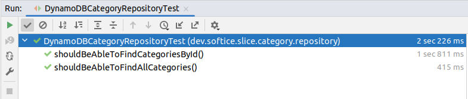
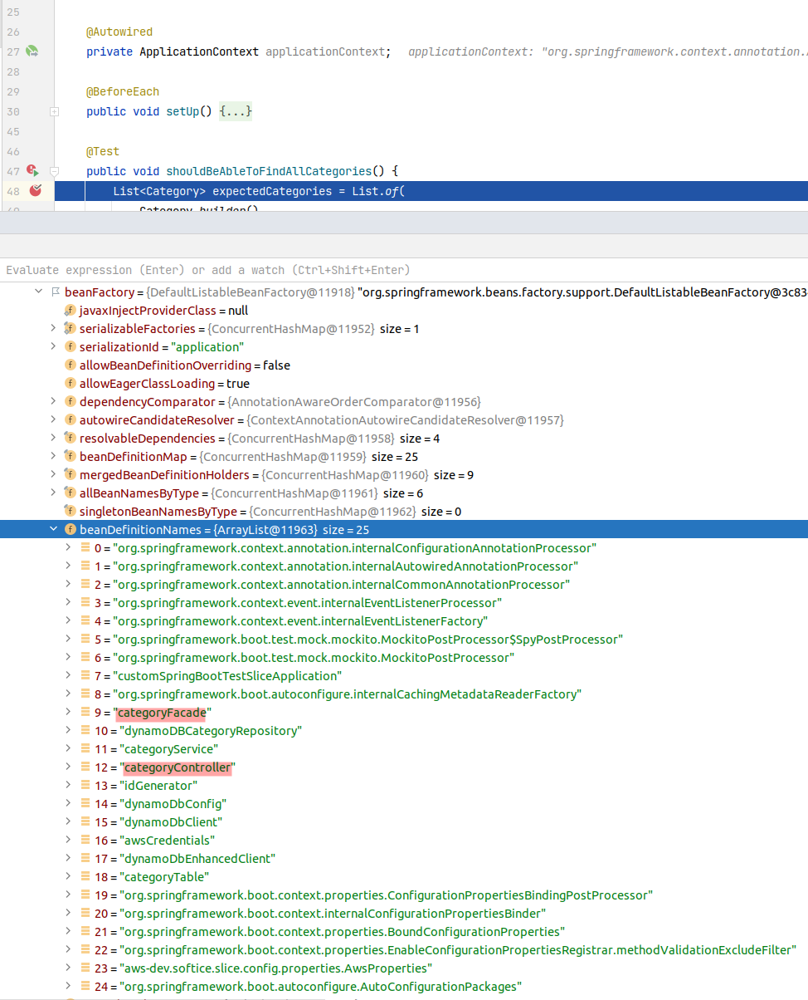
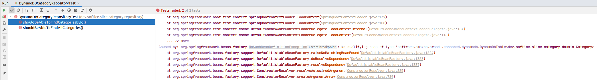
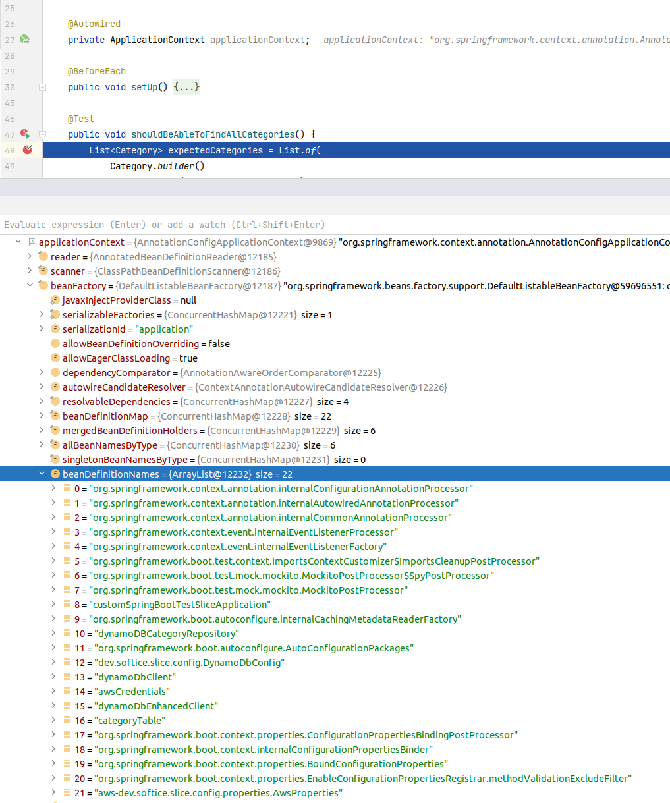

In Spring Boot, when writing tests there’s a way to slice up the test’s application context, so that it contains only the beans which are appropriate
for the given test. Some examples are @WebMvcTest, @DataJpaTest, @RestClientTest and many others. For example, when testing
a jpa repository, we’re not interested in the web-related components (like controllers), so using the @DataJpaTest will reduce the size
of the application context, so that it contains only the repositories and other infrastructure related to that (like DataSources, EntityManagerFactory and others).
When custom test-sliced are needed
Let’s say we are working on an application which uses DynamoDB. It is a simple REST API for a simple anonymous forum, having categories, topics and comments.
Let’s have a look more closely at the categories part of the application. The Category entity will look something like this:
The DynamoDbBase will act as the base-class for all entities. It has a generic partition and sort key, because we plan to use a single DynamoDB table for
all entities (also known as Single table design).
Now the Category entity finally looks like the following:
The CategoryRepository interface specifies the repository contract, at the moment having the findAll(), findById() and create() operations. The implementation
can look something like this:
The DynamoDBCategoryRepositoryTest is quite simple. What’s worth noting is that before each test we try to clean up the table, by deleting the table and
re-creating it. We also insert some test data so that we have something to work with. Also it’s worth pointing out that this test uses Localstack to
simulate the real DynamoDB service. We spin-up Localstack using Testcontainers, and the AbstractDatabaseTest contains all the guts related to that:
A slight problem with this test is that it uses the @SpringBootTest which pretty much spins up the whole application context, containing not only
repository-specific classes, but also web related ones for example. This can increase the test’s startup time and it’s a shame, since we don’t care about the
web layer for this particular test. Let’s try to fix this, by writing a custom test slice.
Creating a custom test-slice
It’ll be nice to create a custom test-slice. We want something like @DataJpaTest, which allows us to either spin up only the repository layer.
Let’s take a look at the @DataJpaTest annotation, so that we find some inspiration:
@BootstrapWith(DataJdbcTestContextBootstrapper.class): specifies how to bootstrap the application context. DataJdbcTestContextBootstrapper
is a small specialization of SpringBootTestContextBootstrapper
@ImportAutoConfiguration: allows to import some auto-configurations. It’s useful since all auto-configurations were disabled by @OverrideAutoConfiguration(enabled = false)
@TypeExcludeFilters({DataJdbcTypeExcludeFilter.class}): this is the most interesting one, this is the actual filter of the beans which we want to include/exclude
from the application context
Everything else just configures the repository infrastructure, like enabling caching (via @AutoConfigureCache) and transactions (via @Transactional).
Now let’s try to create a similar thing for DynamoDB. We’ll create a custom annotation named @DynamoDbTest, which initially will look like the following:
Since we didn’t add yet the @TypeExcludeFilters annotation, with a custom implementation of the TypeExcludeFilter, we’ll still end up with the whole application context.
But let’s try to annotate our DynamoDBCategoryRepositoryTest with the @DynamoDbTest annotation, just to make sure everything still works:
If we try to run the tests, they pass, which means that we didn’t broke anything yet.

If we try to inject the ApplicationContext into our DynamoDBCategoryRepositoryTest and inspect it in the debugger, we’ll see something like this:

We can observe that our ApplicationContext contains all the beans, including the ones from the web-layer which we’re not interested in for this particular test.
In order to fix that, we’ll implement a custom TypeExcludeFilter. It will look something like this:
Which means that by-default we’ll include in the ApplicationContext only beans annotated with the @Repository annotation. If we take another look at our
@DynamoDbTest annotation:
we can observe that we have a repositories() attribute, which allows us to spin up for the test either all repositories (in case the repositories() is empty)
or a particular one, by specifying it like this: @DynamoDbTest(repositories = DynamoDBCategoryRepository.class).
If we’ll leave the repositories() attribute empty (like the following @DynamoDbTest(repositories = {}), then all @Repository-annotated classes will end up
in the application context. DynamoDbTypeExcludeFilter.getDefaultIncludes() method defines this behavior:
In case we do specify the desired repository, like this: @DynamoDbTest(repositories = DynamoDBCategoryRepository.class), then
DynamoDbTypeExcludeFilter.getComponentIncludes() method specifies that only the DynamoDBCategoryRepository class should be included.
Now we’ll need to register the new TypeExcludeFilter like this:
1
2
3
4
5
6
7
8
9
@ExtendWith(SpringExtension.class)@OverrideAutoConfiguration(enabled=false)@BootstrapWith(SpringBootTestContextBootstrapper.class)@Retention(RetentionPolicy.RUNTIME)@Target(ElementType.TYPE)@TypeExcludeFilters(DynamoDbTypeExcludeFilter.class)//<--- this one was added
public@interfaceDynamoDbTest{Class<?>[]repositories()default{};}
If we’ll try to run our test now, it’ll fail with the following error:

The problem is that the DynamoDbTypeExcludeFilter included in the app context only the @Repository-annotated classes and filtered out everything else,
including our DynamoDbConfig java-config class, which declares our DynamoDB table.
In order to fix that, we’ll need to register the DynamoDbConfig in the @DynamoDbTest annotation, like this:
1
2
3
4
5
6
7
8
9
10
@ExtendWith(SpringExtension.class)@OverrideAutoConfiguration(enabled=false)@ImportAutoConfiguration(dev.softice.slice.config.DynamoDbConfig.class)//<--- this one was added
@BootstrapWith(SpringBootTestContextBootstrapper.class)@Retention(RetentionPolicy.RUNTIME)@Target(ElementType.TYPE)@TypeExcludeFilters(DynamoDbTypeExcludeFilter.class)public@interfaceDynamoDbTest{Class<?>[]repositories()default{};}
At this point, not only our test will pass, but it’s ApplicationContext will contain only DynamoDB-specific beans, like shown below:

Conclusion
In this blog post we saw how to create a custom Spring Boot test slice for DynamoDB. We saw that it’s pretty easy, we just need a custom annotation annotated
with: